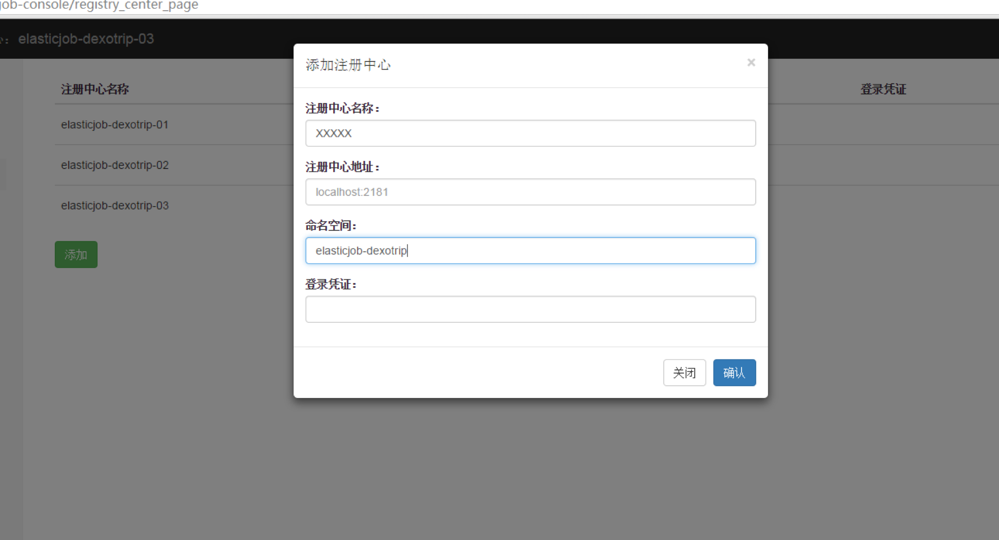
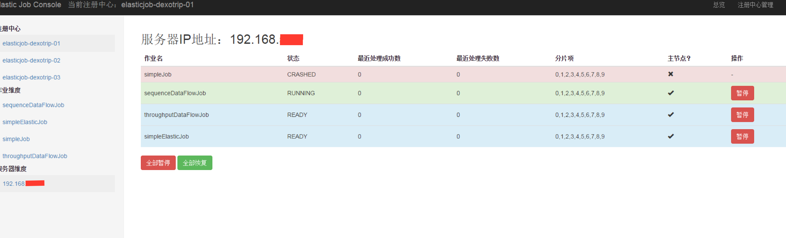
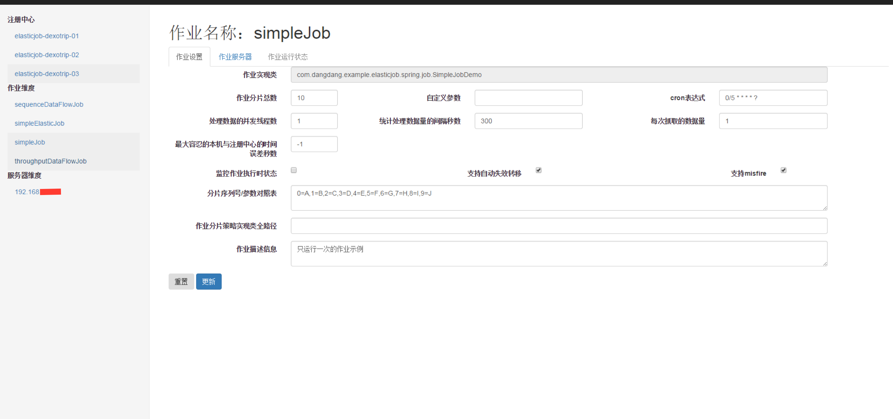
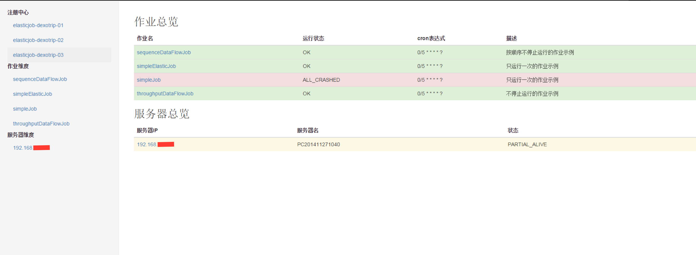

快速上手
-
下载源码和文档
https://github.com/dangdangdotcom/elastic-job


选择 tags\1.0.2 作为源码
其中，需要用 elastic-job-example 来做应用例子，自行安装 Zookeeper 来做注册中心。
-
安装 lombok 包（开发代码省略了 set get log等，需要安装此包才不会报错）
lombok 的官方网址：http://projectlombok.org/
lombok 安装
使用 lombok 是需要安装的，如果不安装，IDE 则无法解析 lombok 注解。先在官网下载最新版本的 JAR 包，现在是 0.11.2 版本，我用的是 0.11.0。第一次使用的时候我下载的是最新版本的，也就是我现在用的 0.11.0，到现在已经更新了两个版本，更新的好快啊……
可以用以下两种方式安装：
- 双击下载下来的 JAR 包安装 lombok
-
eclipse / myeclipse 手动安装 lombok
- 将 lombok.jar 复制到 myeclipse.ini / eclipse.ini 所在的文件夹目录下
-
打开 eclipse.ini / myeclipse.ini，在最后面插入以下两行并保存：
-Xbootclasspath/a:lombok.jar -javaagent:lombok.jar
- 重启 eclipse / myeclipse
-
Zookeeper的安装和配置
参考资料：http://blog.csdn.net/shatelang/article/details/7596007
快速配置
- 下载解压到指定目录
- 配置bin：zkServer.cmd(zkServer.sh)，默认不需要修改，默认读zoo.cfg
- 配置conf：zoo.cfg（注意log dataDir目录须先建）
tickTime=2000 initLimit=10 syncLimit=5 dataDir=D:\\javawork\\zookeeper-3.4.6\\data dataLogDir=D:\\javawork\\zookeeper-3.4.6\\log clientPort=2181 - 启动：zkServer.cmd(zkServer.sh)，无报错。
-
验证：JPS，存在QuorumPeerMain 为已启动；验证端口 netstat -ano|findstr 2181

-
客户端命令
echo ruok|nc 127.0.0.1 2181 zkCli –server 127.0.0.1:2181 zkCli.cmd –server 127.0.0.1:2181 zkCli.cmd –server 127.0.0.1:2182 zkCli.cmd –server 127.0.0.1:2183 zkCli.cmd –server 127.0.0.1:2181 连接 zkCli.cmd
- 显示根目录下、文件： ls / 使用 ls 命令来查看当前 ZooKeeper 中所包含的内容。
- 显示根目录下、文件： ls2 / 查看当前节点数据并能看到更新次数等数据。
- 创建文件，并设置初始内容： create /zk "test" 创建一个新的 znode节点“ zk ”以及与它关联的字符串。
- 获取文件内容： get /zk 确认 znode 是否包含我们所创建的字符串。
- 修改文件内容： set /zk "zkbak" 对 zk 所关联的字符串进行设置。
- 删除文件： delete /zk 将刚才创建的 znode 删除。
- 退出客户端： quit
- 帮助命令： help
- cmd 配置3个zkServer1.cmd zkServer2.cmd zkServer3.cmd，各自增加 set ZOOCFG=..\conf\zoo1.cfg 读不同配置文件
-
配置conf
tickTime=2000 initLimit=10 syncLimit=5 dataDir=D:\\javawork\\zookeeper-3.4.6\\data\\1 dataLogDir=D:\\javawork\\zookeeper-3.4.6\\log\\1 clientPort=2181 server.1=127.0.0.1:2887:3887 server.2=127.0.0.1:2888:3888 server.3=127.0.0.1:2889:3889
tickTime=2000 initLimit=10 syncLimit=5 dataDir=D:\\javawork\\zookeeper-3.4.6\\data\\2 dataLogDir=D:\\javawork\\zookeeper-3.4.6\\log\\2 clientPort=2182 server.1=127.0.0.1:2887:3887 server.2=127.0.0.1:2888:3888 server.3=127.0.0.1:2889:3889
tickTime=2000 initLimit=10 syncLimit=5 dataDir=D:\\javawork\\zookeeper-3.4.6\\data\\3 dataLogDir=D:\\javawork\\zookeeper-3.4.6\\log\\3 clientPort=2183 server.1=127.0.0.1:2887:3887 server.2=127.0.0.1:2888:3888 server.3=127.0.0.1:2889:3889
-
dataDir 目录 需要建myid文件，内容对应为服务器序列。

-
启动3个服务，zkServer1.cmd zkServer2.cmd zkServer3.cmd，过程会有报错，等三个全启就不会报错了。

-
启动 elastic-job-example
其中 reg.properties 为注册服务配置
serverLists=localhost:2181 #对应各自服务器的zookeeper ip端口 namespace=elasticjob-dexotrip #命名空间，用于注册的时候连接 baseSleepTimeMilliseconds=1000 maxSleepTimeMilliseconds=3000 maxRetries=3
job.properties 为作业配置
启动应用：SpringJobMainWthNamespace 或者 SpringJobMainWthoutNamespace
-
启动 elastic-job-console
访问http://localhost:8080/elastic-job-console/，用户名密码为root/root
注册连接信息，对应各自应用服务的配置

连接上，自动把当前的相关服务和作业信息加载。可以在里面启停服务，启停作业，修改作业参数，查看服务，作业状态等。




-
三种作业类型的区别

-
Simple类型作业
Simple类型作业意为简单实现，未经任何封装的类型。需要继承AbstractSimpleElasticJob，该类只提供了一个方法用于覆盖，此方法将被定时执行。用于执行普通的定时任务，与Quartz原生接口相似，只是增加了弹性扩缩容和分片等功能。
-
ThroughputDataFlow类型作业
ThroughputDataFlow类型作业意为高吞吐的数据流作业。需要继承AbstractThroughputDataFlowElasticJob并可以指定返回值泛型，该类提供3个方法可覆盖，分别用于抓取数据，处理数据和指定是否流式处理数据。可以获取数据处理成功失败次数等辅助监控信息。如果流式处理数据，fetchData方法的返回值只有为null或长度为空时，作业才会停止执行，否则作业会一直运行下去；非流式处理数据则只会在每次作业执行过程中执行一次fetchData方法和processData方法，即完成本次作业。流式数据处理参照TbSchedule设计，适用于不间歇的数据处理。
作业执行时会将fetchData的数据传递给processData处理，其中processData得到的数据是通过多线程（线程池大小可配）拆分的。如果采用流式作业处理方式，建议processData处理数据后更新其状态，避免fetchData再次抓取到，从而使得作业永远不会停止。processData的返回值用于表示数据是否处理成功，抛出异常或者返回false将会在统计信息中归入失败次数，返回true则归入成功次数。
-
SequenceDataFlow类型作业
SequenceDataFlow类型作业和ThroughputDataFlow作业类型极为相似，所不同的是ThroughputDataFlow作业类型可以将获取到的数据多线程处理，但不会保证多线程处理数据的顺序。如：从2个分片共获取到100条数据，第1个分片40条，第2个分片60条，配置为两个线程处理，则第1个线程处理前50条数据，第2个线程处理后50条数据，无视分片项；SequenceDataFlow类型作业则根据当前服务器所分配的分片项数量进行多线程处理，每个分片项使用同一线程处理，防止了同一分片的数据被多线程处理，从而导致的顺序问题。如：从2个分片共获取到100条数据，第1个分片40条，第2个分片60条，则系统自动分配两个线程处理，第1个线程处理第1个分片的40条数据，第2个线程处理第2个分片的60条数据。由于ThroughputDataFlow作业可以使用多于分片项的任意线程数处理，所以性能调优的可能会优于SequenceDataFlow作业。
分数据处理，需要自己实现，可以根据分片的ID位数，对应数据的位数进行处理。
-
命令行工具的一些简单操作
伪集群配置